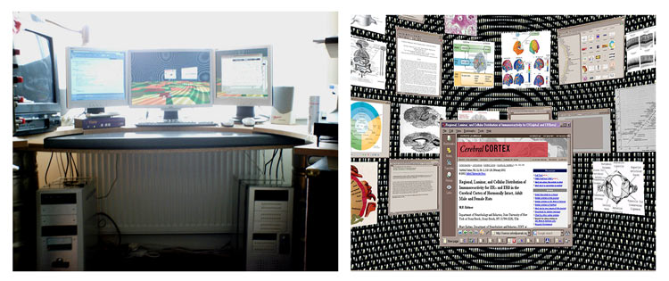
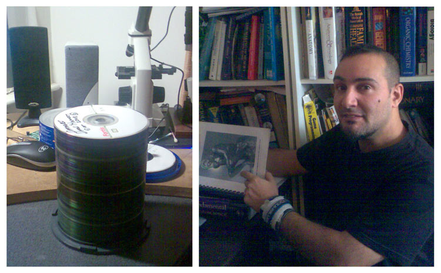

STORY BEHIND THIS PROJECT
Due to the unusual approach, and my scientific non status i feel it would be a problem if i did not give the background to why and how "dipole neurology" came to be.
1. PTSD AND ALTERED SENSORY PERCEPTIONS
In 1999 I accidentally left a candle burning in the bathroom of a flat I was sharing with a lifelong friend. In no time at all the house was ablaze and everybody but my friend was outside . When outside we looked up at his window locked and going black with smoke, tried to get in but the heat was impossible. It is hard to describe the horror as the windows grew darker, thinking your oldest friend is in there, and i was totally responsible. I looked round for him in vain, and then slumped down in the back garden in shock. Five minutes later, he then walked up the back path, wondering what was going on. I can say I was certainly relieved, but by then something had altered in my brain, compounded by less dramatic but nonetheless continuing stress due to losing a year of creative projects, and becoming homeless from the fire.
Post traumatic stress disorder (PTSD) can cause the brain to go haywire, constant adrenaline can wreak havoc on the limbic system, shrinking the hippocampus, and with cognitive results that resemble the administration of Ketamine (A mind altering drug in humans). A few days later, I was sitting up in bed having breakfast, I looked down at my chest and it was covered in blood. I closed my eyes in shock, and then opened them and the blood was gone. I had Visual Perception of heat haze emanating from the head of a woman who had come to visit. I felt strong tingling sensations like I was being sucked into a magnetic field when I touched her head. I also felt strong electrical field charges coming from someone else. There were episodes where I was doing something, then suddenly felt like I entered a timeless trance, where I felt I was floating for hours at one with some higher consciousess, when I had really been standing just on my own a few minutes. Not much later, I felt like the house around me was disintegrating with the world, bit by bit till it was just me floating in another dimension. These were linked to the PTSD as i have not had any since. Another scientist in my family had a similiar experience, so is the scientifc brain more sensitive than usual ?

ABOVE : Windows of flat, where I “perceived” I had been responsible for burning a best friend to death. RIGHT : This is kind of what I saw, like heat haze, no colours.
2. THE DIPOLE IDEA
At the time of these incidents, I had an interest in neuropsychology, specifically psychometric tests for brain laterality. I was baffled to understand how it is that such a large percentage of people could fall into these left / right dominant brain behaviours. There is a journal called "laterality" devoted to this, and they still dont know. I would get my friends in on this stuff, and it would seem that the really left brain dominant types would tend to have a general style whereby they were in a constant state of evaluation in social situations. Often critical of anything new. Whereas the right brain dominant types were mostly novelty seeking, but also prone to errors. These differences kind of distilled later to something more basic. Left brain thinkers would tend to wait or ogranize for things to come to them, and think of more reasons not do things, than do them, and said “no” more often in response to creative suggestions. The right brained thinkers would tend towards “yes” answers, and jump towards anything new, while not so enthusiastic about doing anything too old hat. Also It was as if the left brain was conserving people in a lower state of energy and the right brain pushing people into a higher one.
This puzzle about what was causing these “yes” and “no”, answers from each side of the brain, naturally got put in context with that breif period of sensory ability to perceive “charge” type phenomena from certain peoples head areas. One day I just said, to a friend who had suffered about a year of my laterality obsession. “That’s it, it must be electromagnetic opposites. “Positive” for the right, and “Negative” for the left.
I bought the university books in neuroscience and physics, but also took a renewed interest in psychic / new age community both IRL and the internet. in regards to unusual sensory experiences. Although the answers from the new age community were cosy, I have always liked to find outs what's what, and this wasn't popular. I was bringing up to them, that there was a lot of scientific papers coming out, looking at many of these psychic experiences through brain scanning, Out of body experience, hallucination. It was possible to understand most of them with physics and neuroscience, and that many like hallucination, and perhaps OBE looked to be generated inside the brain. Pecieving extra from the electromagnetic spectrum points to a reduced thalamic compression. As these experiences are confirmation to them of their religious beliefs i wasnt well recieved.

Science VS New age : The books I started buying (left) and those of a new age friend (right) My truth seeking methods were totally incompatible with the new age community, but at least they would allow discussion of “psychic” type phenomena.
3. ACADEMIC SUPPORT AND RESEARCH TOOLS
At in informal social gathering in 2003 I met Wajid Zia who was a psychologist. He seemed to find it interesting that knew so many current facts plus a load of theories about the brain. He asked me to do a web design job for his university dept, then later i revealed to him I have percieved electrical fields eminate from other people, and that the evidence points to them being unfiltered sensory information, rather than internal generation. He said I should use my knowledge and experience to write papers on these brain dipole theories I was proposing.
From that stage I got provided academic support, use of uni facilities, journal access, understanding research methods and how the academic system operated. I got serious enough to take on the task of teaching myself neuroscience while at the same time putting a load of it through the dipole filter. That process could be called analytical induction or it could be me putting my imaginary framework on the data. But the point really was not to prove a dipole, but like my approach with sensory experience, get at the truth. Understand the brains physics, how it was producing perceivable fields (or not) and also what caused lateral differences, which are pretty well proven by now,. If the dipole model falls, which it did many times, it didn’t matter. I taught myself neuroscience and more by doing it.
For the incredible amount of data I had to get through, I built a research system based on the cortex. One computer each for the right and left hemispheres. One for visual thinking, sifting for dipole related patterns through neurological and physics imagery. The other for language thinking, where I created big databases of reference checked information. The two were networked and each with its own screen and a “corpus callosum style switch” to throw the left or right computer onto another main middle screen. (see photo below) The idea is that I knew I tended to naturally utilize the creative right side too much, so I needed to balance it by switching my field of vision to the right side, when looking at referenced information. (Since building this system and researching this way, i have found out that the right hemisphere is mainly visual and the left mainly language based, and that looking right or left activates one side or the other.) By having a separate computer for referenced data, and one for visuals, it is easier to keep the science/creativity ratio more even than it might be. I also redesigned the visual environment of a 3d desktop shell, which helped greatly with searching through many visual images. It is possible to have four to five thousand open at one time within the sphere. A computer system like this is more powerful, than a university library of that time. It is possible to have a thousand images viewable at one time within the sphere, as well as the facility to search a hard drive with thousands of science books and articles.

LEFT : The “Lateral Brain extender” two networked computers with their own screen and a switch to decide whether left or right computer gets to occupy my focus (the middle monitor). RIGHT : Utilizing a 3d desktop was invaluable for keeping large amounts of neuroscience related imagery in current mind.
4. CREDIBILITY PROBLEM AND MY TAKE ON SCIENCE
The very state of being highly creative is a cocktail of neural devations from the average human, and although the evidence points that creative genes are selected for in society, perhaps to upgrade its ideas, we are often viewed negatively if not successful. I believe this lies in our social instincts and brain structures. These drive the majority of us to become involved in competing human hierarchies, that delegate tasks, and it this which builds the world we have. The research in social psychology is indicating that the facility to think creatively is something which is sanctioned by group consensus. The frontal lobe actually inhibits creative thinking, until a person has achieved group status. To be allowed to think creatively is a reward like a pay bonus for being an effective leader who has proven themselves. The problem is, some of us have a brain type which is wired up to think creatively all the time, so we are in the mind of the average person awarding ourselves bonuses or latitude of thought, which we have not earned. If we are always thinking creatively it is hard to be receptive at taking on delegated tasks. A scientist I think is on creative mode most of the time, and that difference scares the average person.
All this gave me a couple of big problems. First of all, i had an albeit short period of sensory perceptions which are due to the brain deviances that give rise to scientific creativity. Specifically, the Low latent inhibition, which reduces the ability of the thalamus to gate sensory input into the clear images suitable for our old hunting reality. In modern times I think having genes which disable that, has an advantage, for example enabling the brain to be quickly flooded with massive amounts of information. As long as there is a matching IQ up to process the information. In traditional times it would be a detriment to humans to be distracted by extra input. We don't actually see a photograph of reality, we see a compressed and rebuilt construction, broken down to lines, shapes, colours, motion and put back together. How i could actually percieve thermal or electromagnetic fields is still not apparent. It's clear though that these kinds of perceptions are unlike hallucinations, where memory is being called on to overlay images on the visual cortex. Instead the thalamus is poorly sifting the sensory spectrum to a small band. So if i had a brain that is perceiving more of the spectrum than normal, but not at a troublesome clinical level where anybody would invesitigate, then i can't exactly ask for consensus on how to understand that. Personal research really is the only way.
Secondly, it was obvious even from a minor investigation, that the brain visually correlates with a dipole yet no science or record of investigation into dipole brain structure exists. Right away this causes a major problem. How do i view neuroscience for not investigating one of the most profound aspects of the brain. i.e It's entire structure, obvious as soon as any student looks at a dissection ? Should i listen to other neuroscientists as i keep on track ? I was having a problem with understanding why the consensus is ignoring such clearly obvious brain structure. Its quite amazing really. I decided not to interact with neuroscientists, till i understood why they had ignored the dipole approach, and progressed this project to something of neuroscience approachable standard, where i have enough basic understanding of that level of reasoning and can speak the language involved.
So that’s the story so far. To what degree is my brain a quadrupole or dipole ? Is our politics a system derived from that, or a system which creates it. Is the human race a complete swarm of interacting particle types with different polarizations ? Are women quadrupoles, and men dipoles ? What does it all mean anyway ? Does it matter ? Well i've told whats what, now, so thats enough blah.. If you are interested in this subject, I imagine you will try to get through it. However, It is highly technical at this stage, having just redone a lot of stuff. I made a video and a relatively easier to read summary as well as a tutorial on dipoles. If there is any questions contact me or comments can be posted at blog.
Felix Lanzalaco 12/11/2008

LEFT : The dipole neurology project backups. RIGHT : That’s me with draft 2.
BACK TO INTRODUCTION PAGE |